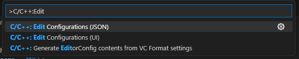
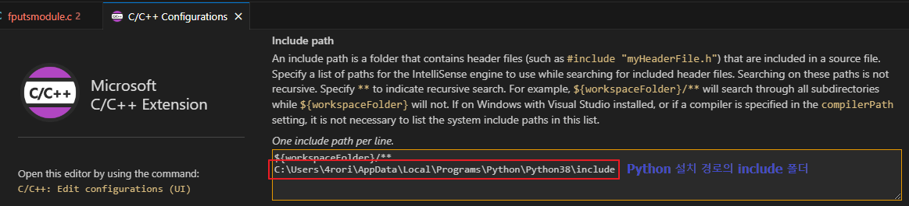

Python C 확장 개발 가이드#
참고 페이지#
Real Python Building a Python C Extension Module
MSDN Python용 C++ 확장 만들기
샘플 코드#
저장소 book/c_extension_sample 폴더
Python C 확장 따라 만들기#
원하는 경로, 원하는 IDE에서 작업을 시작할 수 있습니다
VSCode 기준으로 작업을 진행합니다
C/C++ 확장이 설치되어 있어야 편합니다
VSCode 세팅하기#

Ctrl + Shift + P 를 눌러 C/C++ Configurations 창을 열어줍니다

Include path 에 Python이 설치된 폴더를 보면 include 폴더가 있습니다
해당 경로를 추가해줍니다
c 확장 모듈 기능 작성하기#
이제 간단하게 C API 인 fputs를 python에서 쓸 수 있는 모듈로 개발합니다
#include <Python.h>
static PyObject* method_fputs(PyObject* self, PyObject* args) {
char *str, *filename = NULL;
int bytes_copied = -1;
if(!PyArg_ParseTuple(args, "ss", &str, &filename)) {
return NULL;
}
FILE *fp = fopen(filename, "w");
bytes_copied = fputs(str, fp);
fclose(fp);
return PyLong_FromLong(bytes_copied);
}
PyObject* 를 반환하는 fputs static 함수를 작성하였습니다
PyObject 타입은 Python 의 객체 타입으로 11장 객체와 타입에서도 설명을 하고 있습니다
...
char *str, *filename = NULL;
int bytes_copied = -1;
if(!PyArg_ParseTuple(args, "ss", &str, &filename)) {
return NULL;
}
...
PyArg_ParseTuple 함수는 Python 에서 받은 인수 args를 로컬 변수로 대입합니다
2번째 인자 “ss”는 어떤 타입으로 인수를 파싱할지 설정합니다 (예제에서는 문자열, 문자열로 파싱)
[c-api arg 관련 공식 문서]
3번째 인자부터는 가변길이 인자로 인수를 대입받을 변수들의 주소값을 차례대로 넘겨줍니다
FILE *fp = fopen(filename, "w");
bytes_copied = fputs(str, fp);
fclose(fp);
return PyLong_FromLong(bytes_copied);
받은 인수값으로 파일을 열어 fputs를 수행합니다
그리고 반환값으로 PyLong_FromLong 함수를 통하여 fputs로 쓴 파일 크기를 PyObject로 반환합니다
(PyLong_FromLong에 대한 부분도 11장 객체와 타입 참조)
c 확장 모듈 초기화 함수 작성하기#
위 코드에 이어서 확장 모듈 초기화 부분을 작성합니다
static PyMethodDef FPutsMethods[] = {
{"fputs", method_fputs, METH_VARARGS, "Python interface for fputs C library function"},
{NULL, NULL, 0, NULL}
};
모듈에서 정의된 메서드를 인터프리터에 알려주기위한 PyMethodDef 설정
“fputs” - Python에서 호출되는 이름
method_fputs - 호출되는 C 함수
METH_VARARGS - self와 args를 인자로 받는다는 플래그
(c-api sstructures)
마지막 문자열 - 메서드에 대한 docstring
static struct PyModuleDef fputsmodule = {
PyModuleDef_HEAD_INIT,
"fputs",
"Python interface for the fputs C library function",
-1,
FPutsMethods
};
PyModuleDef 로 C 확장 모듈 자체에 대한 정보를 저장 (PyModuleDef 문서)
총 9개의 멤버가 있지만 여기서는 필요한 5개만 초기화합니다
PyModuleDef_HEAD_INIT - PyModuleDef_Base 유형의 멤버, 하나만 갖도록 권장
“fputs” - Python C 확장 모듈 이름 (import fputs)
3번째 문자열 - 모듈에 대한 docstring
-1 - 프로그램 상태 저장에 필요한 메모리 크기, 모듈이 여러 서브 인터프리터에서 사용될 때 유용, 음수 값은 서브 인터프리터를 지원하지 않음을 나타냄
FPutsMethods - 메서드 테이블에 대한 참조
PyMODINIT_FUNC PyInit_fputs(void) {
return PyModule_Create(&fputsmodule);
}
Python에서 모듈을 처음 임포트 할 때 PyInit_fputs를 호출하게 합니다
PyMODINIT_FUNC은 암시적으로 세 가지 작업을 수행
함수 반환형을 PyObject*로 암시적 설정
특별한 연결을 선언
함수를 External “C” 로 선언 (C++의 경우 C++ 컴파일러에 심볼에 대한 이름이 섞이지 않도록 지시)
PyModule_Create는 PyObject* 형의 새로운 모듈 객체를 반환
인자로는 이전에 선언해둔 fputsmodule 객체의 주소를 전달
setup.py 작성#
from distutils.core import setup, Extension
def main():
setup(name="fputs",
version="1.0.0",
description="Python interface for the fputs C library function",
author="<개발자 이름>",
author_email="your_email@gmail.com",
ext_modules=[Extension("fputs", ["fputsmodule.c"])])
if __name__ == "__main__":
main()
Python 패키지를 distutils를 사용하여 모듈을 빌드 할수 있습니다
내부에서 clang을 사용하여 빌드합니다
python setup.py install
setup.py 작성 후 위 명령어로 실행하면 내가 만든 모듈이 빌드되고 설치됩니다